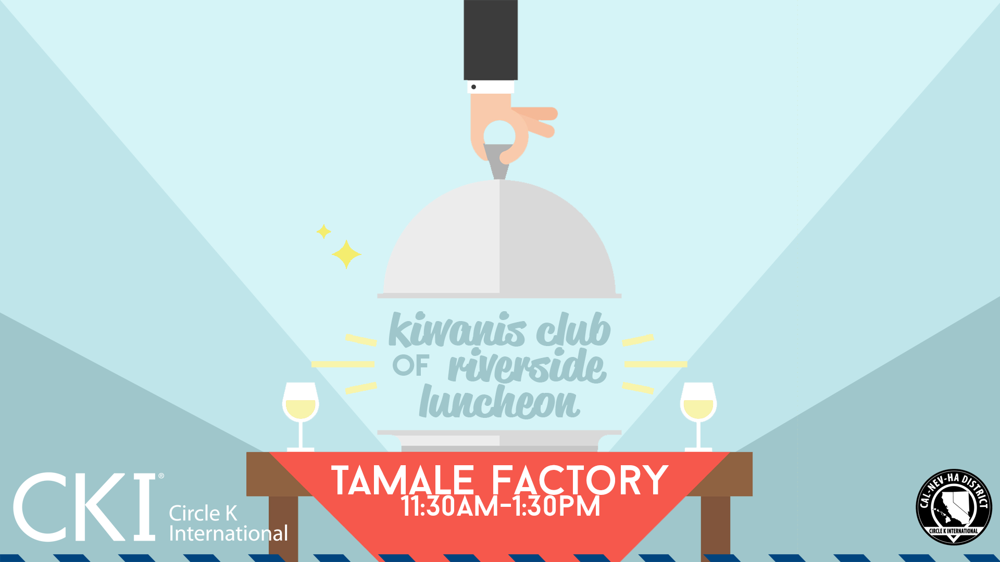
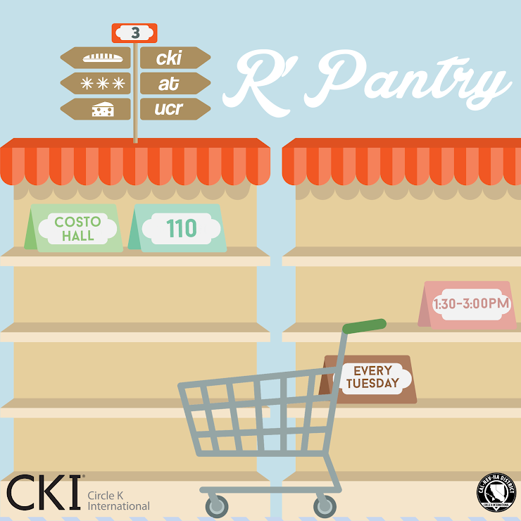
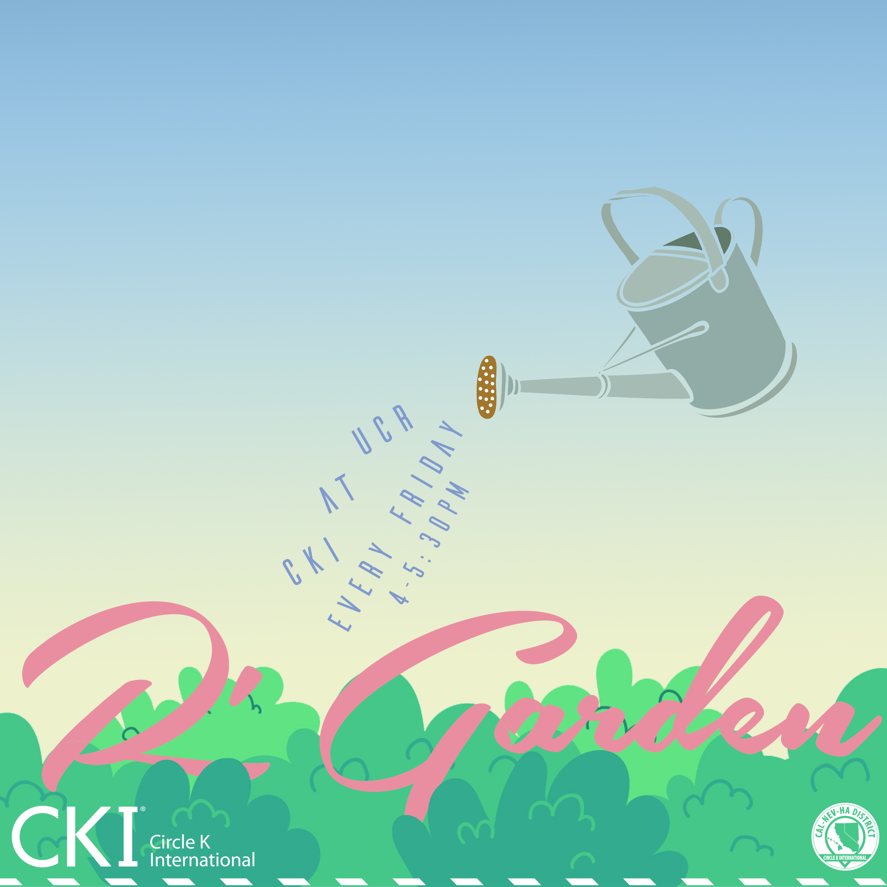
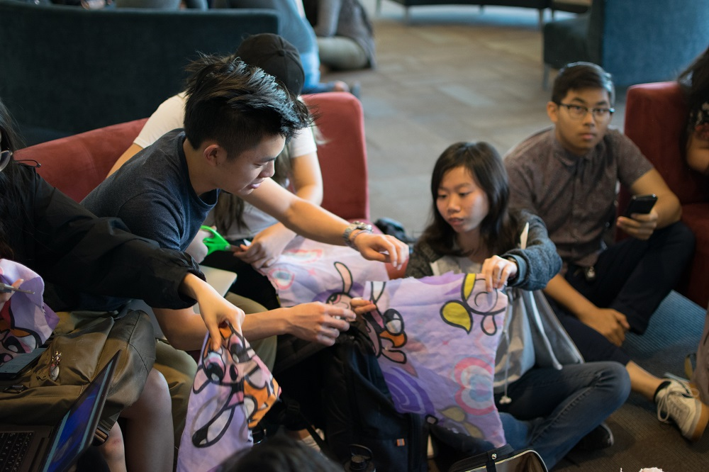

Club Events

Luncheon
What is luncheon? Every Thursday, our club has the opportunity to attend the Kiwanis Club
of Riverside's (KCOR) general meeting at the Tamale Factory in Downtown Riverside. They
even provide food! Kiwanis is our club's support. They are there to help us develop ourselves
and build professional connections. Overall, our attendance to these meetings are a chance
to show KCOR our appreciation for all of the support that they have given us. Interested?
Sign up on the Calendar!



PYOS
Plan Your Own Service (or PYOS for short) are short and sweet services chaired by the one and only
CKI at UCR members! They can range from making pet toys for the pet shelters or even motivational
sticky notes for tabling! If you're interested in hosting your very own PYOS, please talk to the VPS,
Micheal Feng.
Fill out the PYOS form here: tinyurl.com/pyos1920
Fill out the PYOS form here: tinyurl.com/pyos1920

Kids Rock Concert
Kids Rock Concert, K-Rock for short, is CKI at UCR's biggest annual fundraiser for Pediatric
Trauma Program, filled with music, bonding, prizes, and more!